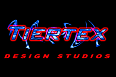

Carrera Power Slide (Europe) (En,Fr,De,Es,It,Nl)
EEPROM 4K Save Format Spec gbakit Built-In
Cartridge Identity
- Game Code
AEDP(FamilyAED)- Header Title
CARRERA POWE- Maker / Revision
7W/ rev0- ROM Size
- 4.0 MiB (4,194,304 B)
- Save Media
EEPROM 4K- SHA-256
02fe39fba2efb64f19834398f0622e9f74286a09a0aff6e4b4bb35925bab1098- Engine / SDK Group
comm-004(98 families)
Screenshots

Battery Save Format Specification
Open Full Save Format SpecDownload Sample .sav (512 B)Download save-format.json
- Specification Coverage
- 15 mapped fields · 2 verified checksum(s) · Confidence: HIGH
- gbakit Built-In Support
- Built-in (AEDP)
- Emulator Verification
- Checksum enforced: Yes · Repaired save accepted: No
gbakit save verify AEDP save.sav
gbakit save decode AEDP save.sav
gbakit save fix AEDP damaged.sav -o repaired.savObserved Battery Save Layout
- Fill Byte & Active Size
0x00fill · 17–18 / 512 B active (entropy 3.79 bits/B)- Active Offset Ranges
0x1–0x9,0x12,0x3D–0x3E,0x41–0x46(4 total)- ASCII Magic / Headers
- None detected
- Observed Variable Regions
- 8 bytes across 2 spans:
0x1–0x6,0x45–0x46 - Candidate Checksum/Counter Spans
0x45–0x46- Integrity Check
- Confirmed at
0x45
ROM Assets, Compression & Audio
- BIOS Compression
- LZ77 (
0x10): 0 streams · RLE (0x30): 65 streams - ROM Pointer Tables
- 3 tables (0 pointing to validated compressed streams)
- SDK Backup Tags
EEPROM_V122,EEPROM_V122